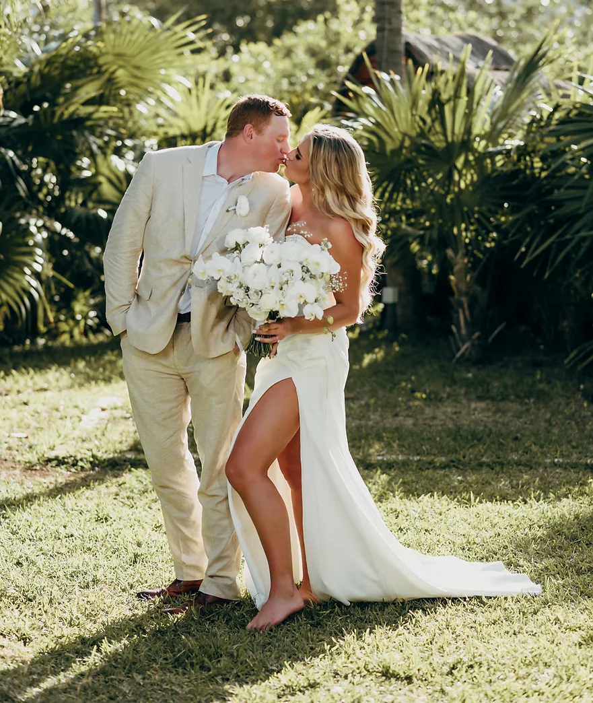
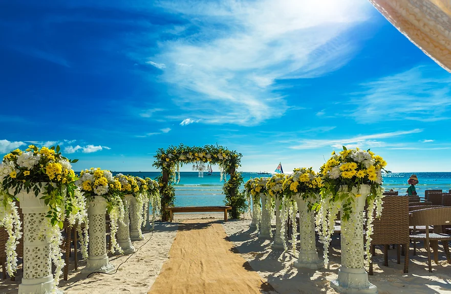
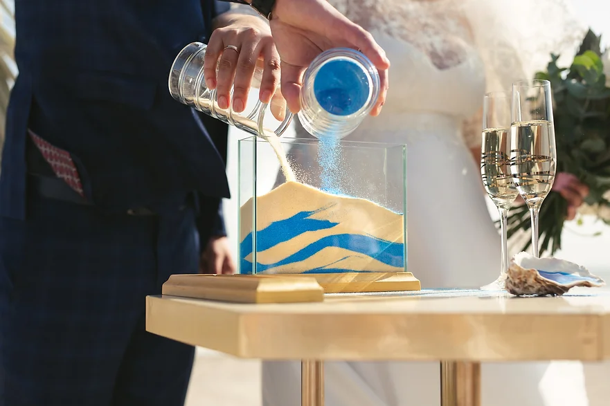
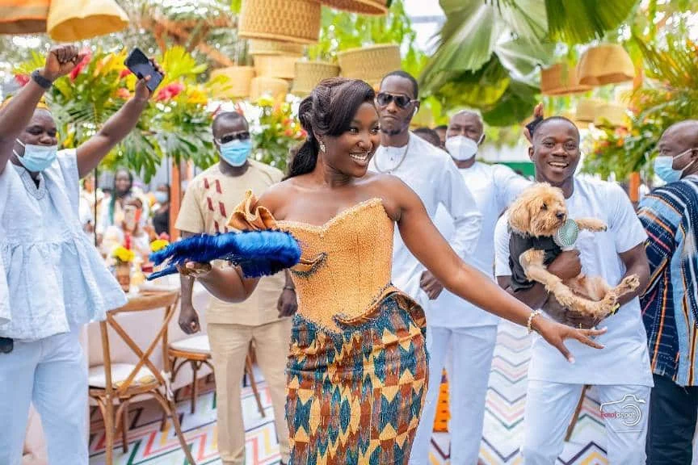
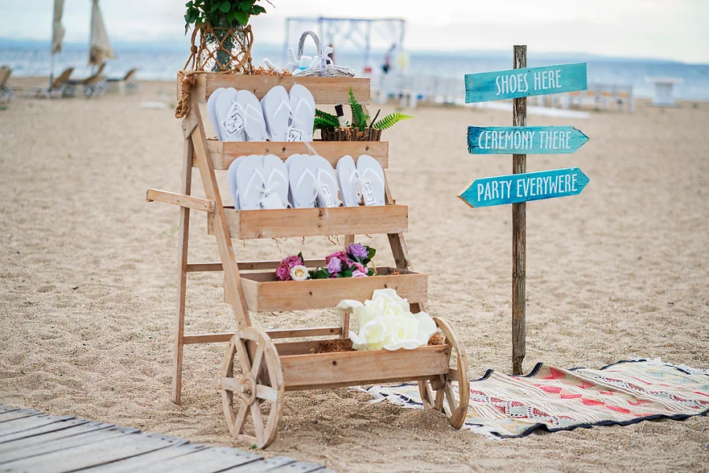
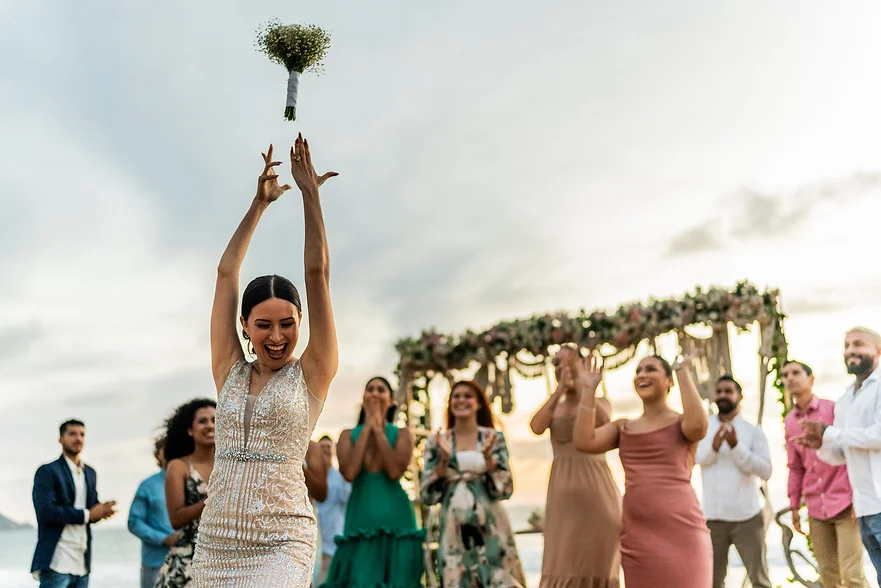

The are many Beach Resorts In Ghana, the notable one's are;
If you are you considering a destination wedding in Ghana, then this article is for you! Destination weddings are becoming increasingly popular these days. Mostly because they offer not only a beautiful ceremony backdrop, but an experience that differs from traditional hometown weddings and is usually much less expensive as well. One of the most sought out destinations for a wedding in paradise is Ghana. But before you decide if exchanging vows in Ghana is right for you and your partner, it is important to understand the requirements to do so. Let's explore the different types of wedding ceremonies available in Mexico in order to help you find the perfect fit for your special day.
When it comes to destination weddings in Ghana, you will have a few different ceremony options to choose from- Symbolic, Legal and Catholic ceremonies . Understanding the difference between these will allow you to choose the best way for you and your partner to say, "I do."
A legal ceremony in Ghana, often referred to as Marriage of Ordinance, is a legally binding marriage recognized worldwide. This type of ceremony is conducted by a judge or an officiant authorized by the Ghanaian government. Civil ceremonies are not a common choice for a destination wedding because of the legal requirements associated with it.
Requirements for a Legal Ceremony in Ghana:The most common ceremony for a destination wedding in Ghana is a Customary(Symbolic) ceremony. This is a great option for couples who want the beauty of a destination wedding but not the legalities that come along with it. Symbolic ceremonies allow you to have a more intimate ceremony and personalize your vows to create the wedding of your dreams. Choosing a symbolic ceremony for your destination wedding means you can incorporate personal elements such as unity candles or sand ceremonies. You can also choose to include any traditions that are important to you, whether they are religious or cultural. These types of ceremonies are not legally binding which means they can be performed by an officiant such as a friend or family member.
 I am sure you are wondering, "if it's not legally binding, then are we even married?" The answer is simple- before your go to Ghana for your wedding, you and your partner will actually get legally married in your hometown at the courthouse or by an ordained minister at the location of your choice. Don't worry, no one even has to know about it if you don't want them to! Your anniversary date can be celebrated as the one in Mexico since that is when your marriage ceremony took place. As your travel agent, I will make sure that you understand what you need to do before you head to Mexico to make sure you're legally married. I've got your back! Overall, having a Customary (symbolic) ceremony is the most stress-free option since there are no legal documents or procedures required.
The last type of wedding you can have in Ghana is a Catholic Ceremony. This type of wedding is typically conducted according to the traditional catholic wedding process. There are some beautiful catholic churches and cathedrals in Ghana, such as the like Holy Trinity and ST Pauls. These churches offer grand and stunning venues and make for some spectacular pictures. there are also some resorts with chapels on site so you don’t have to leave the resort for your ceremony!
Choosing the right type of wedding ceremony in Ghana is just the beginning of creating your perfect day. As your dedicated Ghana destination wedding specialist, I bring extensive local knowledge, meticulous attention to detail, and a passion for crafting unique and unforgettable experiences. From navigating legal requirements, to selecting the ideal resort for a seamless celebration and making sure travel is arranged for both you and your guests, my expertise and connections in Ghana will transform your vision into reality. Let me take the stress out of planning and guide you through every step, so you can focus on enjoying the most magical day of your life.
Your comments and views are welcome